a few参考的是：PolarD&N PIoTS 简单 - v1c0 - 博客园
bluetooth test
小游家里的智能灯泡家具总是在自己没有控制的时候开开关关，他怀疑是有人控制自己的灯泡进行重放。
现在我们获得了一个控制灯泡重放的蓝牙hcl文件，请使用FrontLine11工具找出控制关闭灯泡指令的第一组data文件，将其进行md5加密。
工具版本：CPAS-11(Frontline_16.10.12321.12610).exe
这里尝试用wireshark做，解析不出，所以使用题目推荐的工具做
打开log文件，可以看到解析的非常详细
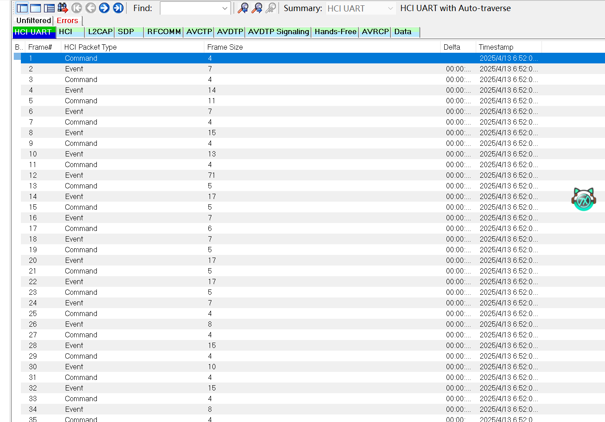
我们着重观看command指令，右键type栏，选择过滤即可过滤出只含command的栏目。我们观看size，一般来说size不会太大，但是前面有的四五个大小的应该不是，这里着重先看看十几的
询问AI得知：
控制指令的核心逻辑是固定的（比如 “关灯” 就是固定的二进制模板）。为了防止重放攻击（恶意重复发送旧指令），协议里会加一个自增计数器 / 序列号，每次操作 + 1。
因此我们着重看size相同部分的data段的数据
经过观察，size=15和size=22的段很可疑。按照逻辑来说，也是先开灯再关灯吧，而且14内容更小，数据长度更短，且包含 ee fd（这通常是厂商的 Manufacturer ID，即设备标识码），属于建立连接或配置基础状态的指令，对应开灯操作。
因此我们找到第一个size=22的地方就行了
这里找到的内容和wp都一样，但是md5值不同，因此知道怎么做的就好了
zigbee恶意设备隐蔽通信分析
我们监测到某智能家居 ZigBee 网络中混入了一个未授权的恶意设备，该设备伪装成温湿度传感器，通过隐蔽信道传输数据。请分析捕获的流量包（zigbee_ctf.pcap），完成以下任务：
1.识别恶意设备：找出异常设备的源地址。
2.提取隐蔽数据：从恶意设备的通信中提取隐藏的 flag。
3.组合 flag：按数据包顺序拼接字符，格式为 flag{…}。
查找源地址为0xbeef的设备
数据包结构: [帧控制][PAN ID][源地址][目标地址][数据标识][数据]
正常温度数据范围: 20-30
flag字符按数据包顺序排列
数据包结构:# 0-1字节: 帧控制 (0x0800 表示标准数据帧)# 2-3字节: PAN ID (小端序)# 4-5字节: 源地址 (小端序)# 6-7字节: 目标地址# 8-9字节: 数据标识 + 数据
背景信息也给我们说的很详细，现在只需要分析数据包即可
直接点开是一个报错：
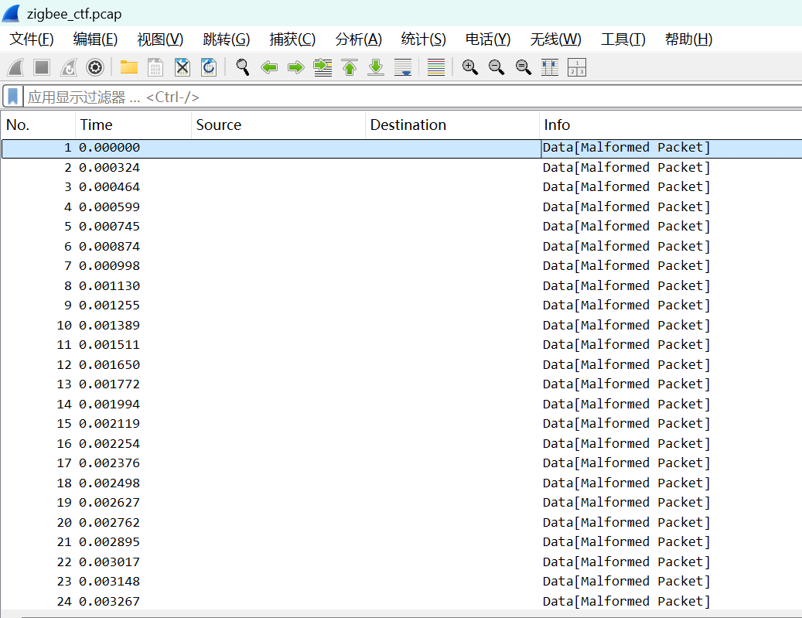
这是由于wireshark解析数据包的时候出了问题。
这道题看官方wp是利用python脚本解析数据包，因为题目已经给了数据包格式了。
用豆包写一个脚本跑一下：
1
2
3
4
5
6
7
8
9
10
11
12
13
14
15
16
17
18
19
20
21
22
23
24
25
26
27
28
29
30
31
32
33
34
35
36
37
38
39
40
41
42
43
44
45
46
47
48
49
50
51
52
| from scapy.all import rdpcap, Raw
import struct
import sys
def extract_flag(pcap_file="zigbee_ctf.pcap"):
print(f"[*] 正在加载数据包文件: {pcap_file} ...")
try:
pkts = rdpcap(pcap_file)
except FileNotFoundError:
print(f"[-] 错误: 找不到文件 {pcap_file}，请检查路径。")
sys.exit(1)
flag_chars = []
print("[*] 开始分析数据包，查找源地址为 0xbeef 的恶意设备...\n")
for i, pkt in enumerate(pkts):
if Raw in pkt:
raw = pkt[Raw].load
if len(raw) >= 6:
src_addr = struct.unpack('<H', raw[4:6])[0]
if src_addr == 0xbeef:
print(f"\n[+] 发现目标数据包 #{i}")
print(f" -> 源地址: 0x{src_addr:04x}")
print(f" -> 原始负载 (Hex): {raw.hex()}")
if len(raw) >= 9:
flag_byte = raw[-1]
char = chr(flag_byte)
flag_chars.append(char)
print(f" -> 提取末尾字节: Hex {hex(flag_byte)} -> 字符 '{char}'")
if flag_chars:
flag_content = "".join(flag_chars)
print("\n[================ 分析完毕 ================]")
if flag_content.startswith("flag{"):
print(f"[+] 最终获取的 Flag: {flag_content}")
else:
print(f"[+] 最终获取的 Flag: flag{{{flag_content}}}")
else:
print("\n[-] 分析完毕，未提取到任何数据。")
if __name__ == "__main__":
extract_flag("zigbee_ctf.pcap")
|
flag：flag{afwu241nnak31b}
默认密钥漏洞
题目只给了一个流量包，我们打开进行分析
wireshark打开还是识别错误，看来只能利用python脚本分析。
从wp知道了这是此协议的默认出场密钥没有更换导致的可解析的漏洞，问了AI这个密钥一般就是ZigBeeAlliance09
看了WP知道加密是异或，但是gpt给我跑的是AES加密。感觉还是需要更多提示才行
1
2
3
4
5
6
7
8
9
10
11
12
13
14
15
16
17
18
19
20
21
22
23
24
25
26
27
28
29
30
31
32
33
34
35
36
37
| from scapy.all import rdpcap, Raw
DEFAULT_KEY = bytes.fromhex("5A6967426565416C6C69616E63653039")
PCAP_FILE = "zigbee_traffic.pcap"
def xor_decrypt(data: bytes, key: bytes) -> bytes:
return bytes(b ^ key[i % len(key)] for i, b in enumerate(data))
def main():
packets = rdpcap(PCAP_FILE)
if not packets:
print("[-] pcap 为空")
return
packet = packets[0]
if Raw not in packet:
print("[-] 数据包中没有 Raw 载荷")
print(packet.show())
return
encrypted_payload = packet[Raw].load
decrypted = xor_decrypt(encrypted_payload, DEFAULT_KEY)
print("[*] Encrypted payload (hex):", encrypted_payload.hex())
print("[*] Key (ascii):", DEFAULT_KEY.decode())
print("[*] Key (hex):", DEFAULT_KEY.hex())
print("[+] Decrypted payload (hex):", decrypted.hex())
try:
print("[+] Decrypted text:", decrypted.decode())
except UnicodeDecodeError:
print("[!] 明文不是合法 UTF-8：", decrypted)
if __name__ == "__main__":
main()
|
OTA升级的文件
有个用于OTA升级的文件，其中包含图像序列号信息，把其用md5加密 即可得到flag{}。
有一个bin文件，首选binwalk进行分析
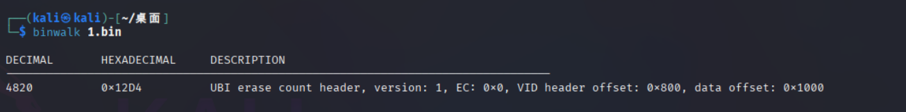
里面存在一个ubi文件，这里选择使用https://github.com/onekey-sec/ubi_reader进行提取
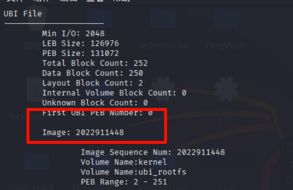
lanya
看提示就知道是蓝牙分析了，提示说写入了某value
Peripheral_0x219a264b是从设备（看英语也知道）
因此过滤此source
先搜一下value看看
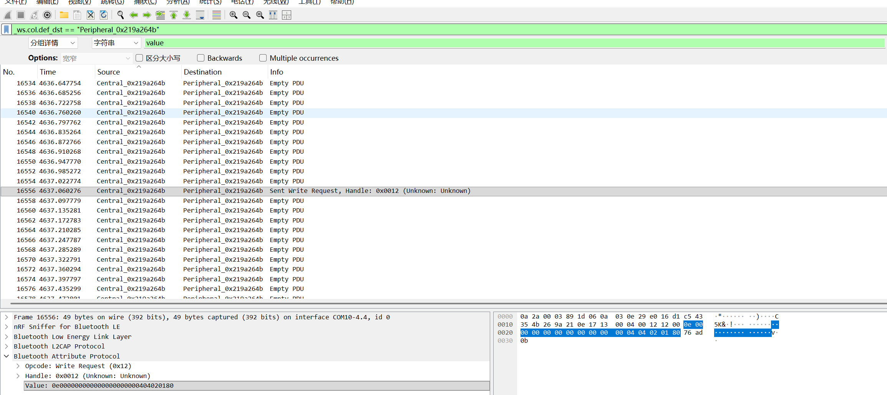
这是最后一条，一般都是看最晚的，复制下来md5加密即可
NFC水卡
有两张NFC卡，其中第2张卡的金额需要转到第1张卡中（金额相加），转入后1卡其校验位和总金额所在扇区的内容经md5（32位大写）加密为flag{}。
对于NFC的分析，看WP也是找ai分析
关于其扇区数据可以查看此大佬博客：https://blog.csdn.net/hiwoshixiaoyu/article/details/104048663
对比两张卡的数据，可以发现金额信息存储在 2扇区 的第0块和第2块：
-
卡1 (1.txt) 2扇区第0块：00 00 00 00 00 00 00 00 00 FF FA 87 00 05 78 FD
-
卡2 (2.txt) 2扇区第0块：00 00 00 00 00 00 00 00 00 FF FB AC 00 04 53 FD
通过分析该数据块的结构，可以得出以下规律：
-
金额数据：第12-14字节为金额的十六进制表示。卡1为 00 05 78 ，卡2为 00 04 53 。
-
金额取反（Inverse）：第9-11字节为金额数据的按位取反。例如卡1中，FF FA 87 是 00 05 78 的精确取反值 。
- 校验位：第15字节（最后一个字节）为校验位。该字节是前面0-14字节的累加和对 256 取模的值。因为 3 字节金额与其 3 字节取反值相加恒为 0xFFFFFF，所以这 6 个字节累加和恒等于 0x02FD，再加上前面的全 0 字节，总和永远是 0x02FD。因此，无论金额如何变化，最后一位的校验位恒为
FD。
将两张卡的金额进行相加：
- 卡1金额：0x0578（十进制 1400）
- 卡2金额：0x0453（十进制 1107）
- 总金额：1400 + 1107 = 2507，转为十六进制为 0x09CB。
根据新金额生成对应的写入数据：
- 新金额字节：
00 09 CB
- 新金额取反：
FF F6 34
- 新校验位：保持
FD 不变。
根据上述计算结果更新卡1的 2扇区。第1块的计数器和第3块的密钥控制块保持不变 。转入后卡1的完整 2扇区内容如下：
1
2
3
4
| 00 00 00 00 00 00 00 00 00 FF F6 34 00 09 CB FD
58 00 00 01 00 00 00 00 00 00 00 00 00 00 00 59
00 00 00 00 00 00 00 00 00 FF F6 34 00 09 CB FD
12 63 22 33 53 13 FF 07 80 69 12 63 22 33 53 13
|
将该扇区内容提取为连续的十六进制大写字符串，即为你需要进行 MD5 加密的明文内容：
1
| 000000000000000000FFF6340009CBFD58000001000000000000000000000059000000000000000000FFF6340009CBFD126322335313FF078069126322335313
|
不太清楚题目加密的原md5是什么，是flag{46FEED7D708C39B9C843768F0559F1C0}
HCI_Log_Analysis
主机曾通过信息查询命令获得了蓝牙控制器的蓝牙地址，结合日志找到蓝牙控制器的蓝牙地址。（将获得的标准MAC地址进行MD5加密得到flag）
主机启动后，通常会发送 HCI_Reset、HCI_Read_BD_ADDR 等命令来获取控制器信息。
使用wireshark打开，过滤此信息。回来的就是信息，wireshark分组详情还能看到里面有个“xiaomi”
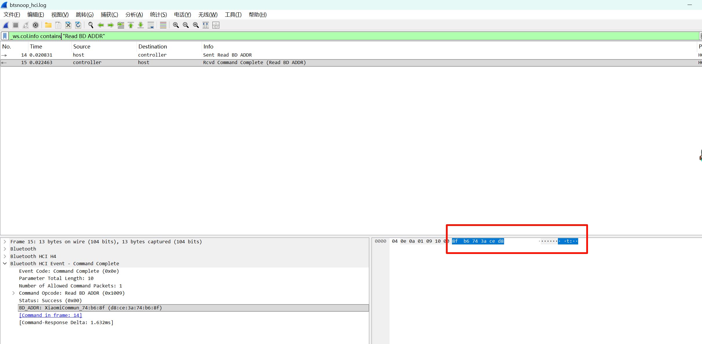
出来的地址是d8-ce-3a-74-b6-8f，得用短横杠连接
无线追踪
小游发现隔壁邻居的行踪很是诡异，怀疑他们有不法的目的，就想用自己的力量去找寻线索，确定后再移交给警方。经过几天的观察，发现邻居家的WIFI是最容易发现线索的地方，于是小游就要通过暴力破解的方式破解密码。目前仅知道密码是邻居家某个人的生日，请你想办法帮助小游破解WIFI密码。工具版本：Elcomsoft Wireless Security Audito7.12.538
破解wifi密码的题目，其实可以用Kali自带的工具
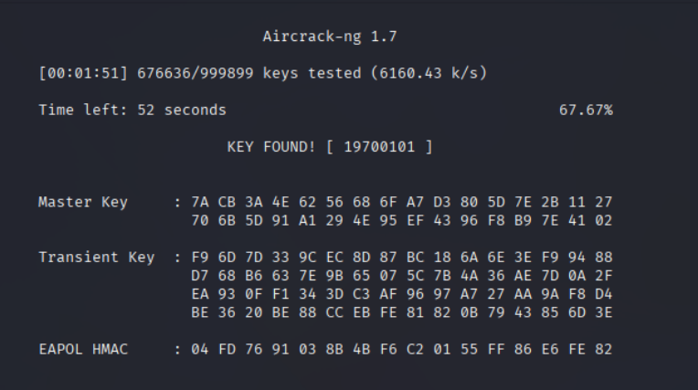
题目所提供的则是windows的工具，使用方法也比较简单。只需要导入即可，效果如下：速度也是不慢
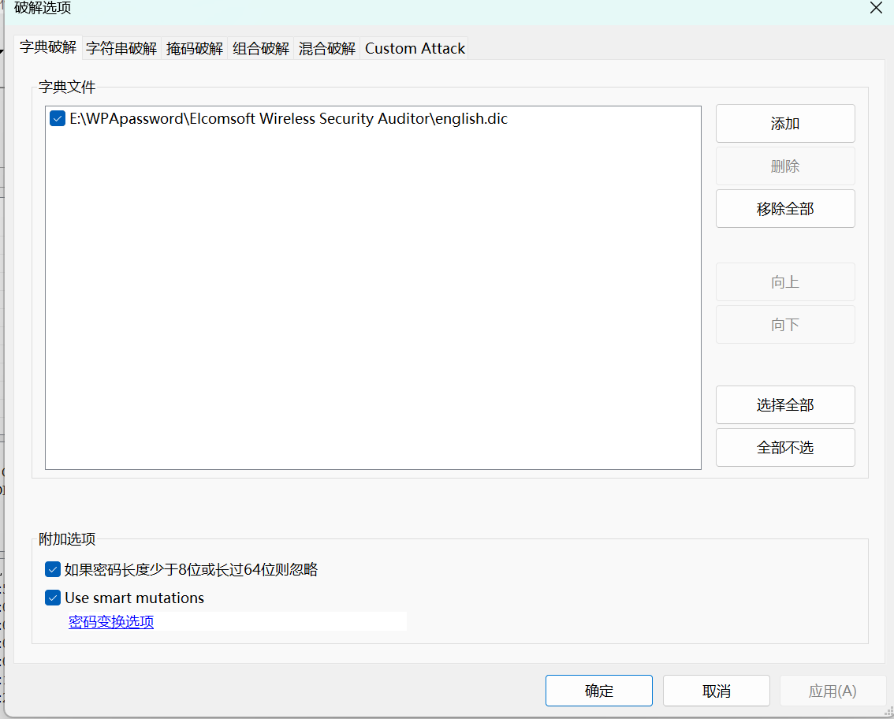
无线密钥追击4.0
polar智能家居公司的安全团队接到用户投诉：其新部署的“IoT智能婚房网关”存在安全隐患，攻击者可利用漏洞获取家庭Wi-Fi控制权。安全人员取证发现，攻击者成功捕获关键流量包。现提供攻击流量包文件wpa2-01.cap，请找出被劫持的Wi-Fi密码，密码md5加密即为flag。
在wireshark输入：eapol，这个协议专门是认证用的
- Message 1: 路由器发送随机数 (ANonce) 给客户端。
- Message 2: 客户端发送自己的随机数 (SNonce) 和一个 MIC (消息完整性代码)。这就是密码破解工具（如 Aircrack-ng）最感兴趣的包，因为它包含了验证密码所需的关键线索。
- Message 3: 路由器发送组临时密钥 (GTK)。
- Message 4: 客户端确认，握手完成。
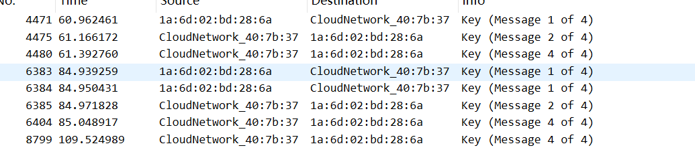

在这题目之中，这只是协商密钥，不能明文看到密钥，我们需要用kali的工具去破解
这款工具叫做aircrack-ng，我们使用弱口令字典rockyou（kali自带，一般在/usr/share/wordlists/
）即可破解。具体命令：aircrack-ng -w /usr/share/wordlists/rockyou.txt /home/kali/桌面/wpa2-01.cap
攻击效果下图
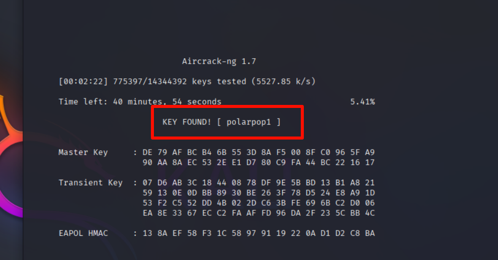
md5一下提交即可
AESKeyRecovery
背景信息：
某智能家居厂商推出的智能门锁设备，采用AES-128-CBC算法加密设备与云端的通信数据，以保障开锁指令、用户密码等敏感信息的传输安全。该设备的加密密钥存储在固件中，但为 “隐藏” 密钥，研发人员采用了以下设计：
1.128 位 AES 密钥拆分为 8 个独立的十六进制字节
2.每个密钥片段的原始字节经过XOR 异或变换后存储，变换规则为：存储值 = 原始密钥片段字节 XOR 0x5A；
3.变换后的存储值分散在固件的特定偏移地址中，地址规律为：0x1000 + n×0x200（其中 n 为 0~7，即 8 个存储位置）。
现提供该智能门锁的固件片段文件lock_firmware.bin（可通过题目附件获取），请基于该文件完成密钥提取
用010打开文件也可以，这里我选择用python提取相应字节
1
2
3
4
5
6
7
8
9
10
11
12
13
14
15
16
17
18
19
20
21
22
23
24
25
26
27
28
29
30
31
32
| with open("./lock_firmware.bin", "rb") as f:
b = bytearray(f.read())
aes_key = ""
print("===== 逐步骤密钥提取（十六进制）=====")
for n in range(8):
offset = 0x1000 + n * 0x200
print(f"\n【片段{n+1}】")
print(f" 偏移地址: 0x{offset:04X}")
if offset >= len(b):
print(f" 错误：偏移地址超出文件范围，填充0x00")
firmware_byte = 0x00
else:
firmware_byte = b[offset]
print(f" 固件中读取的字节: 0x{firmware_byte:02X}")
original_byte = firmware_byte ^ 0x5A
print(f" 异或0x5A后原始字节: 0x{original_byte:02X}")
aes_key += f"{original_byte:02X}"
print("\n===== 最终结果 =====")
print(f"完整AES密钥（无分隔）: {aes_key}")
|
这里怀疑是wp答案给错了，脚本算的是66 BC 3D 52 7F E9 D7 23，但是wp是66B03D527FE9D723
后续：联系了官方，改正过来了flag
ezzigbee
一位客户报告说他们的Zigbee智能门锁系统被入侵，攻击者可以在非授权状态下开锁。客户提供了一个Zigbee网络通信包捕获文件，其中记录了包含入侵行为的通信数据，你需要分析该抓包文件，找出攻击者留下的flag。
先字节流搜索flag试试，直接出了
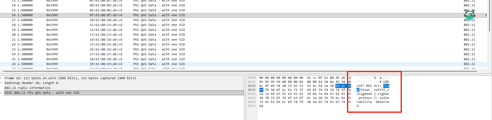
miwifi
注意“polarctf”哦，现获得了路由器固件，你需要找到程序的ip和端口
binwalk提取出文件系统，我们搜polar文件
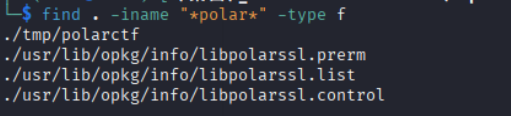
可以看到tmp文件夹存在polarctf文件，这正好是二进制分析领域，小试牛刀一下
程序内编码一串字符串，经过cyberchef解码为ip地址
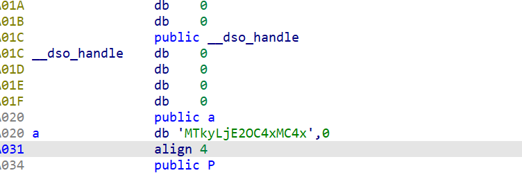
现在就剩下端口了。我们发现这串字符串下面用*拼接了一些字符，最后一个是6
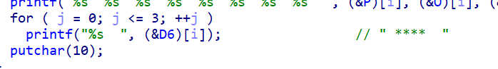
main函数是打印操作，最后会打印4次6。我们也可以直接运行就看到了结果，这里就不贴图了
小明爱跑步
1
2
3
4
5
6
7
8
9
10
11
| 背景：小明去跑步的路线图
目标：这份 GPX 在地图里会非常“糊”，看不出来任何字母。但有一条规则：发现自己一段特定时间行程轨迹路线构成类似与字母（等差数，如:0 3 5 ...）
## 你的任务
1. 解析整个 GPX（所有 track/segment/point）。
2. 仅保留 **时间戳秒数为特定时间** 的点。
3. 用保留下来的点生成新 GPX 并在地图软件打开 。
得到的字母md5加密得到正确flag
网站：https://crypot.51strive.com/md5.html
|
题目给了一个gpx文件
在线网站打开是杂乱无章的
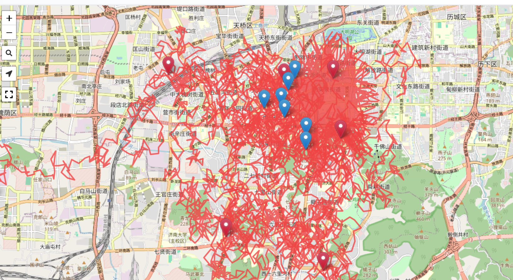
接下来看了wp才有思路，将时间按照奇数偶数分为两个
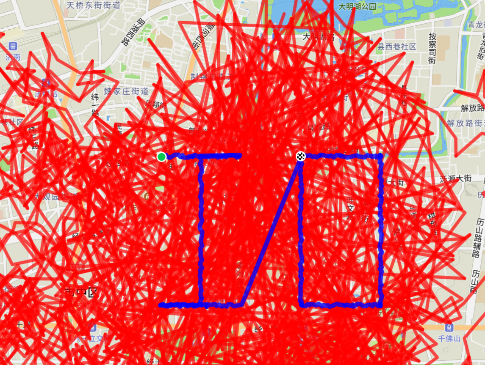
分离出来的得到了IO两个字母，md5一下即可
exp：
1
2
3
4
5
6
7
8
9
10
11
12
13
14
15
16
17
18
19
20
21
22
23
24
25
26
27
28
29
30
31
32
33
34
35
36
37
38
39
40
41
42
43
44
45
46
47
48
49
50
51
52
53
54
55
56
57
58
59
60
61
62
63
64
65
66
67
68
69
| import gpxpy
import gpxpy.gpx
def split_gpx_by_odd_even_time(gpx_file_path):
with open(gpx_file_path, 'r', encoding='utf-8') as f:
gpx = gpxpy.parse(f)
odd_gpx = gpxpy.gpx.GPX()
even_gpx = gpxpy.gpx.GPX()
base_name = gpx.name if gpx.name else "track"
odd_gpx.name = f"{base_name}_odd"
even_gpx.name = f"{base_name}_even"
odd_gpx.creator = gpx.creator
even_gpx.creator = gpx.creator
odd_gpx.author_name = getattr(gpx, 'author_name', None)
even_gpx.author_name = getattr(gpx, 'author_name', None)
for track in gpx.tracks:
new_odd_track = gpxpy.gpx.GPXTrack()
new_even_track = gpxpy.gpx.GPXTrack()
for segment in track.segments:
new_odd_segment = gpxpy.gpx.GPXTrackSegment()
new_even_segment = gpxpy.gpx.GPXTrackSegment()
for point in segment.points:
if point.time:
timestamp_seconds = int(point.time.timestamp())
if timestamp_seconds % 2 != 0:
new_odd_segment.points.append(point)
else:
new_even_segment.points.append(point)
if new_odd_segment.points:
new_odd_track.segments.append(new_odd_segment)
if new_even_segment.points:
new_even_track.segments.append(new_even_segment)
if new_odd_track.segments:
odd_gpx.tracks.append(new_odd_track)
if new_even_track.segments:
even_gpx.tracks.append(new_even_track)
def save_gpx(new_gpx_obj, suffix):
new_file_path = gpx_file_path.replace('.gpx', f'_{suffix}.gpx')
with open(new_file_path, 'w', encoding='utf-8') as f:
f.write(new_gpx_obj.to_xml())
print(f"✅ 已生成 {suffix} 版GPX文件：{new_file_path}")
save_gpx(odd_gpx, "odd")
save_gpx(even_gpx, "even")
if __name__ == "__main__":
split_gpx_by_odd_even_time("sport.gpx")
|
点击挑战
有一个点击挑战的手机游戏，小游非常想通关，请你帮帮他。
这个题目这么像Re呢
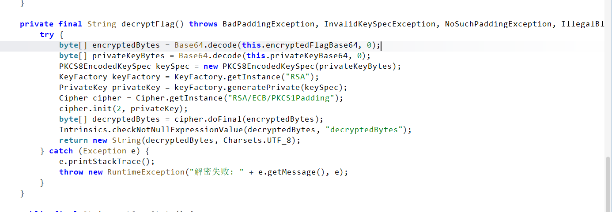
从这个函数看出这就是RSA
密钥和密文都已知。
解密：
1
2
3
4
5
6
7
8
9
10
11
12
13
14
15
16
17
18
19
20
21
22
23
24
25
26
27
28
29
30
31
32
33
34
35
36
37
38
39
40
41
| import base64
from Crypto.PublicKey import RSA
from Crypto.Cipher import PKCS1_v1_5
def decrypt_flag():
encrypted_flag_base64 = "rVAlPcZC8ioAKKp7fQkTD3aGu+VMZxO15xlDjaRsRqjNiFvM+KZIv1Y6f8YnhKmvPYq7AXuhss/qOhVhnXm0hQkcDjbVBlhZidZZc2lw3PIc1mphUVgj+rd1hu3xwDY8Gsh1CNEx0H878B93T+OVshWh6IygFi6VFHEnfYOh99vPcA6MbeaRFMb4ZhWvr122X0/dxsrP1KXlQEWcnLXtPpbIB7aXjwHb1nqUNaD4EaDqNoouF+CxA4YOt4Oh8sHqh8BtNsD2khSrz6rS5mi7DRff4A4RxRvW4SVU0p7z5v6/KXgdhPe7df9k9duKDUgJ8BooPbMJnG/RuqljK3MR3g=="
private_key_base64 = "MIIEvQIBADANBgkqhkiG9w0BAQEFAASCBKcwggSjAgEAAoIBAQDO4h24vdQdH3Y5M2f0UZzU8ESNiNImvUDSa6KnlrXCQn/iOnfQDK97wnx0LDibNlMAE50AizHGXwlWClBqtMohObbiFgZrpONbw1Xyg6sGVPPjDHpqgZkV7iXpAnQdphkeEkp2YVYWPaAwFj+lIQl9IuyW1uaGqYKcAzI4xd9juzA1h9wZjXSVyAo77q/HbNVgM1RFw0zQuUJ8qV1rAZv1zrkv7bRO4O4EC00fxzcvbOdos8WwjKvBwSWI52oJEQ6rhYk471o9YkE6pWxuWWORnjLmmI/Eb66BrVUwLZSyTxtUWNrMqyOmtNlkH6H9HL3MrnrPLRiu6m2BrsOnPDmrAgMBAAECggEAIyqEata5q4mhiu+WCA2nXvrIbFaJglRBJINvTpVrp+2t10KhAxhk6+CPTyAFLzz4ttaepW0DtPiKmbl/GeRJR4SL9bpQtRN+Iib+AQ8ojxb5rep9FIWbBANLJmRoYHHPazEovx6kh3tKM2JUxzjqZ/77wFgfL1y4+tQAQW5BHq5wsnKgW5/kysZf1tNhBvyNCowJF0JxisoGvx5nx63J+d+TAM0XPpQ8RBVFjoR3W2odWdpeAmbMl1Aa4ZihcskBbp4EqYr1QZYGuONzLBLaqtwu+E+uC0JPU3dxy9te3Yjs33Dd41gcg8v6HnTrNFntsfR9TojLmEL5N8q+DWvKgQKBgQDlxYmlfefj+b5+FOuokJWX3ioYhFxM4OVF2WkTirAcydm+b7Teacmc3YL9xr0If+88trjb7b8BXCwiterpFi0Pax/z5u7ZIJ8BA1MwybC0CIBzy2i0tMU0qCPCaMYkrEHjKBrYmSIXAy3jqyZ4V9QMkO4pcJoEPNCSyBPr3cZVewKBgQDmf7oglk890b0CVdFNYzPN2Du01OZ5y7aJbzKGlo/H+xx8Qkm/eUeaIOPTWemZaJYCHOQHKHMN/Zp50qE/g7OkQifrvHSJR+PgLv+YN/Y0Our2zIiY5wdZRNZj6k6l9eDbsR65lDC3bhwahuYBQ1yvHzSdaRjeMCJ2Agod6z69kQKBgCrlTQQ7VC5ocprBNxmaHINks4EuPLkRh1wZ8Zb3XleRi3gVDLQ1FbGWXR0ZnDLZB4XTKwHMCcusNIUqZzeqrzDgs+9p3o9kmqqqvz4teTKzH5/+ioap9OMWvM5PlyZDjm1lEFX9iLK5IjkNu7nd07Wg3QWZgvdljx7IAYgYOC2/AoGADXeG82J0zMLVTS6gZOoX2733dxA9Sv5o8sypYg2n5uI3/taMooA+e7XSOcX2DP18TjFL7VMirb2UaeuxehmCxGUNGgvPrzmhCbcVPdp/KvwKQFMg4/YTitanw/yrjay4730As40B76WiRLZ+97Hs11p2Y4ABcPHVAZoK50aYStECgYEAxktu0YJ2By/rRPB1kAkttSb6PvEAuIwuwUFmttYiNuO8dQktpLjCoi62eyUzPxHWcY0Hxi92IAqfS697e9skEMKrepRZ6ysAkKjOMaJhVAwA+XAdRhaPimy4miDFa5dSFPxcc0JwfCAXkX2C/jjYc9s7t4jOMDnYhGszlzGdjNU="
try:
encrypted_data = base64.b64decode(encrypted_flag_base64)
private_key_der = base64.b64decode(private_key_base64)
rsa_key = RSA.import_key(private_key_der)
cipher = PKCS1_v1_5.new(rsa_key)
decrypted_data = cipher.decrypt(encrypted_data, sentinel=None)
print("🎉 解密成功！通关 Flag 为:")
print("-" * 30)
print(decrypted_data.decode('utf-8'))
print("-" * 30)
except ValueError as e:
print("解密失败。可能的原因：填充模式不匹配（例如游戏实际使用的是 OAEP）。")
print("错误详情:", e)
except Exception as e:
print("发生了一个错误:", e)
if __name__ == "__main__":
decrypt_flag()
|
智能家居设备的固件镜像
你获得了一个智能家居设备的固件镜像，该设备用于家庭安防监控。安全研究人员怀疑该固件中存在硬编码的敏感信息。你的任务是提取并分析固件，找到隐藏的flag。
binwalk没有提取成功，打开010
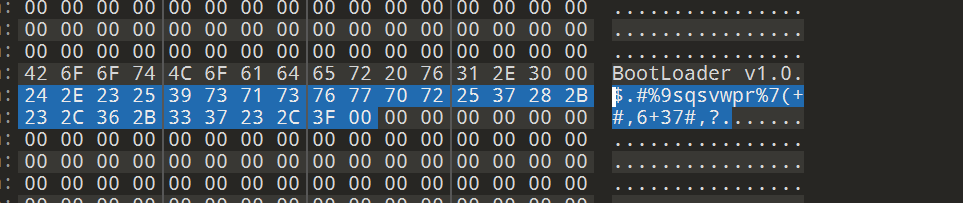
这里是一串乱码
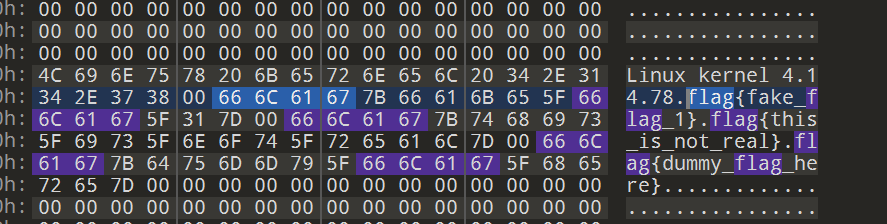
这里是几个假的flag
这里有一个提示是异或0x42
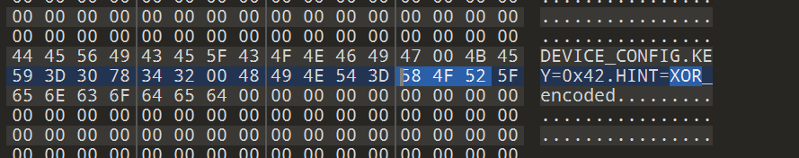
解密即可
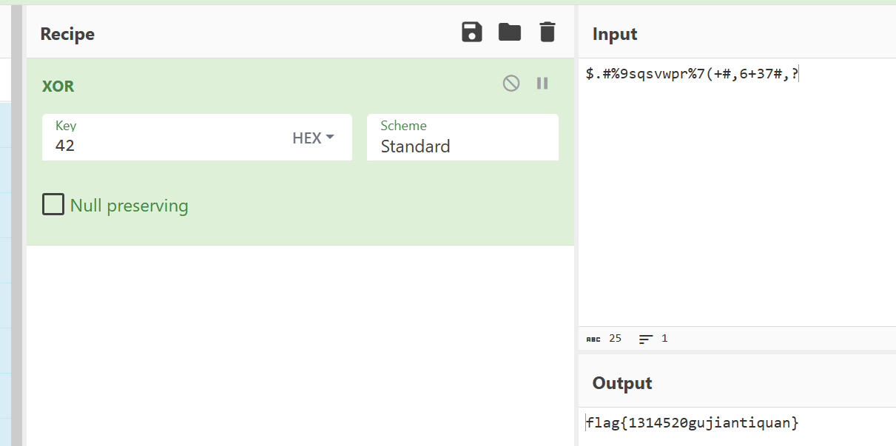
智能灯泡固件更新挑战
题目给了一个py脚本：
1
2
3
4
5
6
7
8
9
10
11
12
13
14
15
16
17
18
19
20
21
22
23
24
25
26
27
28
29
30
31
32
33
34
35
36
37
38
39
40
41
|
def verify_firmware(firmware_data):
"""验证固件完整性并解密flag"""
if firmware_data[:16] != b"FIRMWARE_HEADER_1.0":
print("无效的固件头!")
return False
encrypted_flag = firmware_data[0x60:0x60+16]
key = 0x37
flag = ''.join([chr(b ^ key) for b in encrypted_flag])
if flag.startswith("flag{"):
print(f"固件验证成功! Flag: {flag}")
return True
else:
print("固件验证失败!")
return False
def perform_ota_update():
print("开始OTA更新...")
try:
with open('firmware_encrypted.bin', 'rb') as f:
firmware_data = f.read()
if verify_firmware(firmware_data):
print("更新成功!")
else:
print("更新失败!")
except FileNotFoundError:
print("找不到固件文件!")
if __name__ == "__main__":
perform_ota_update()
|
这道题很简单， 把校验的片段的代码删除掉即可
无线电小试牛刀
这两天小游家的门铃总是没来由的响，他怀疑是无线电攻击。现获得了一个无线电重放的文件，请找出暂停时第三次出现的1160samples时的数据码，先通过高低电平确定信号(0和1，不规则的不计入)，再将其MD5加密
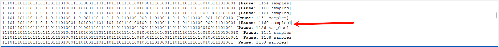
这是题目提示的第三个数据码
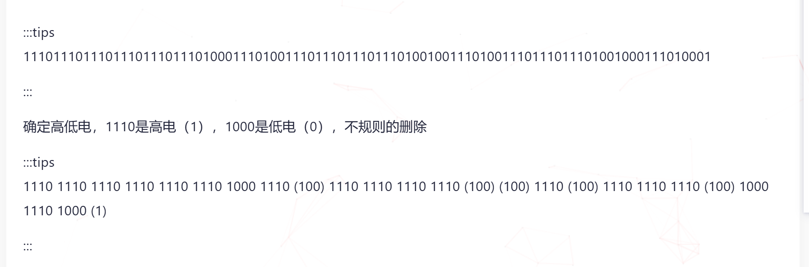
上图直接抄的大佬的了
11101110111011101110111010001110100111011101110111010010011101001110111011101001000111010001
逐组分析：
1110 → 11110 → 11110 → 11110 → 11110 → 11110 → 11000 → 01110 → 11001 → (不规则，删除)1110 → 11110 → 11110 → 11110 → 11001 → (不规则，删除)0011 → (不规则，删除) … 后面大部分序列（如 1010, 0111 等）均不符合 1110 或 1000，属于噪声或不规则信号。
按照规则处理后，有效信号为： 111111011111